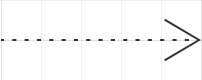

Diagrama de clases UML2
UML son las siglas de “Unified Modeling Language” o “Lenguaje Unificado de Modelado”.
Se trata de un estándar que se ha adoptado a nivel internacional por numerosos organismos y empresas para crear esquemas, diagramas y documentación relativa a los desarrollos de software (programas informáticos).
Categorías de diagramas en UML2
-Diagramas de estructura: Muestran la estructura estática del sistema modelado.
-Diagramas de comportamiento: Muestran el comportamiento dinámico entre los objetos en el sistema, incluyendo cosas como los métodos, colaboraciones y actividades.
Diagramas de estructura en general
Los diagramas de estructura muestran la estructura estática del sistema modelado, centrándose en los elementos del sistema independientemente del tiempo.
La misma, muestra los tipos y las instancias del sistema.
Son muy útiles a lo largo del ciclo de vida del software para una gran cantidad de miembros del equipo. Ya que nos permitirán la validación del diseño y la comunicación del diseño entre miembros del equipo y otros equipos.
En UML2 se consideran a los diagramas de estructura como una clasificación
Diagramas de clases en particular
UML 2 considera los diagramas de estructura como una clasificación, es decir, que, como tal, no hay un diagrama llamado “diagrama de estructura”. Sin embargo, el diagrama de clases ofrece un excelente ejemplo del tipo de diagrama de estructura y nos proporciona un conjunto inicial de elementos de notación que utilizan todos los demás diagramas de estructura.
Los básicos
En la mayoría de los modelos UML, estos tipos incluyen:
- Clase
- Interfaz
- Tipo de datos
- Componente
UML llama a estos tipos “clasificadores”. En general, se puede pensar a un clasificador como una “clase”, pero técnicamente, un clasificador es un término más general que también se refiere a los otros 3 tipos mencionados anteriormente.
Representación de una clase en UML
La representación de una clase en UML está formada por un rectángulo, el cual contiene 3 compartimientos.
- El primer compartimiento, pertenece al nombre de la clase.
- El segundo compartimiento, pertenece a los atributos de la clase.
- El tercer compartimiento, pertenece a los métodos de la clase.
Hay que tener en cuenta el primer compartimiento es obligatorio, mientras que los otros dos compartimientos, son opcionales.
Dicho rectángulo se vería algo así:
Tal como se mencionó, en el primer compartimiento nos encontramos con el nombre de la clase, en el segundo compartimento con los atributos de la clase y en el tercer compartimento con los métodos/operaciones/funciones de la clase.
También podemos observar simbología como “+” y “-“, que en el diseño orientado a objetos representan la visibilidad de los atributos y los métodos.
Visibilidad
En UML hay distintos tipos de visibilidad:
- Público: Representado por un “ + ”.
Se puede acceder al miembro de la clase desde cualquier lugar. - Protegido: Representado por un “ # ”.
Sólo se puede acceder al miembro de la clase desde la propia clase o desde una clase que herede de ella. -
Privado: Representado por un “ - “.
Sólo se puede acceder al miembro de la clase desde la propia clase. -
Paquete: Representado por un “ ~ “.
• Sólo se puede acceder al miembro de la clase desde cualquier otra clase siempre y cuando se encuentre en el mismo paquete.
Atributos de la clase
La sección de atributos de una clase (el compartimento central) es opcional y enumera cada uno de los atributos de la clase en líneas separadas en formato de lista.
La sintaxis usada para estos atributos es la siguiente:
nombre : tipo del atributo
Primero, se pone el nombre partiendo en minúsculas. Luego, dos puntos para separar el nombre del tipo del atributo y finalmente, el tipo del atributo, el cual podría ser un número entero, una cadena de texto, un booleano, entre otros, dependiendo del tipo de diagrama que estemos haciendo.
En un diagrama de clases para software, normalmente se utiliza el tipo de datos que soporta el lenguaje de programación que se vaya a utilizar. Pero se podrían utilizar otras unidades que sean legibles y tengan sentido para la persona que lea el diagrama, como por ejemplo, utilizar “minutos, dólares, fecha, etc”
También, podemos especificar un valor por defecto para los atributos.
nombre : tipo del atributo = valor por defecto
Donde la sintaxis es la misma, nada más que se agrega un “=” luego del tipo de nuestro atributo, y a su derecha, el valor por defecto que queremos que tenga.
Operaciones de la clase
Las operaciones de la clase también conocidas como “funcionalidades” o “métodos”, se encuentran en el tercer compartimento.
Tal como los atributos, las operaciones también son opcionales y se enumeran una a una en formato de lista.
Siendo su sintaxis la siguiente:
nombre(lista de parámetros) : tipo de valor retornado
Primero tenemos el nombre, seguido de una apertura y cierre de paréntesis (), dentro de los cuales, estarán los parámetros si es que corresponde. Luego, tenemos dos puntos, los cuales separan el nombre y sus parámetros, de el tipo de valor retornado.
Si la operación tiene parámetros, estos, tendrán la misma sintaxis que los atributos, es decir:
(nombre del parámetro : tipo del parámetro)
Solo que se encontrarán dentro de la sintaxis de las operaciones, entre los paréntesis a la derecha del nombre de la operación.
Los parámetros pueden tener un indicador opcional para mostrar si el parámetro es de entrada o de salida. Dicho indicador se puede encontrar como “in” u “out”, siendo la sintaxis de la siguiente manera:
nombre( in nombreDelParámetro : tipoDelParámetro ) : tipo de valor retornado
Normalmente se omite este indicador ya que, por defecto, en lenguajes modernos todos los parámetros son “in”. Salvo que se esté utilizando uno viejo como “Fortran”, de ser ese el caso, es útil especificar el indicador “in” u “out”.
Tipos de relacionamiento en el diagrama de clases
| Tipo de Relacionamiento | Notación |
|---|---|
| Asociación | |
| Herencia | |
| Realización/Implementación | |
| Dependencia |  |
| Agregación | |
| Composición |

|
Herencia
La herencia es la capacidad de una clase (clase secundaria) de heredar la funcionalidad idéntica de otra clase (superclase) y luego agregarle una funcionalidad propia a la clase secundaria.
La misma, es representada con una flecha sólida que sale desde la clase secundaria hacia la superclase y termina con una flecha triangular sin relleno.
En este ejemplo, las clases secundarias están heredando todos los atributos y operaciones de la superclase, y le estamos especificando una funcionalidad propia a cada una, la cual es un nuevo atributo y una nueva operación.
Clases y operaciones abstractas
En la imagen anterior se puede apreciar que el nombre y una de las operaciones de la superclase están en cursiva. Esto indica que esa clase y esa operación son abstractas.
Una operación abstracta es una operación de una clase que no tiene implementación o definición, solamente declaración.
Una clase abstracta es una clase de la cual no se pueden definir instancias. Por ese motivo, normalmente no se utiliza la cursiva en el nombre de una superclase, ya que sabemos que no es posible definir instancias de una superclase.
Asociación
La asociación indica que ciertos objetos están relacionados o conectados de alguna forma.
Hay 5 tipos de asociaciones:
- Asociación bi-direccional
- Asociación uni-direccional
- Asociación de clases
- Agregación(básica y de composición)
- Asociaciones reflexivas
Asociación bi-direccional
Una asociación es un vínculo entre dos clases, por lo que las asociaciones siempre son bi-direccionales. Eso significa que ambas clases se conocen una a la otra y su relación, a menos que se califique una asociación de otro tipo.
La asociación bi-direccional se indica mediante una línea sólida entre dos clases.
En cualquier extremo de la línea se coloca un nombre de función y un valor de multiplicidad.
En este ejemplo, tenemos una conexión bi-direccional entre dos clases. Una llamada Profesor y la otra llamada Libros. Con la multiplicidad podemos saber que solo puede haber un Profesor y un solo Libro.
También podemos notar que los roles son “Autor” y “LibroEscrito”. Esto quiere decir, que la clase Profesor, tendrá un atributo llamado LibroEscrito que contendrá como valor el Libro que escribió.
Y la clase Libro, tendrá un atributo llamado Autor, que contendrá como valor el Profesor.
Asociación uni-direccional
Las asociaciones suelen ser bi-direccionales pero a veces es importante hacerlas uni-direccionales para restringir su navegación en un solo sentido.
La asociación uni-direccional hará que dos clases se relacionen, pero solo una clase conocerá que la relación existe.
La misma, es dibujada con una sólida línea entre ambas clases, con una flecha abierta(no una flecha cerrada ni un triángulo) apuntando hacia la clase conocida.
Volviendo al mismo ejemplo, ahora realizado con una asociación uni-direccional, se puede observar que el profesor conoce la clase Libros, pero los Libros no conocen a la clase Profesor.
También sabemos que hay cero o más libros escritos por el Profesor.
Asociación de clase
Una asociación de clase es una clase que forma parte del relacionamiento entre otras dos clases. La misma es representada con una línea punteada y se suele utilizar para definir aún más la relación entre las dos clases en las que se interponga.
En este ejemplo tenemos una clase Estudiante que representa un estudiante y una clase Curso, que representa un curso educativo. La clase Estudiante puede inscribirse en un curso. Una clase de asociación llamada “Inscripción” define aún más la relación entre las clases Estudiante y Curso al proporcionar información de sección, grado y semestre relacionada con la relación de asociación.
Agregación
En los modelos UML, una relación de agregación muestra a una clase como parte o subordinado de otra clase.
Una agregación es un tipo especial de asociación en la que los objetos se ensamblan o configuran juntos para crear un objeto más complejo.
Una agregación describe un grupo de objetos y como interactúa con ellos.
A su vez, también protege la integridad de un conjunto de objetos al definir un único punto de control, denominado “agregado”, en el objeto que representa al conjunto. La agregación también usa el objeto de control para decidir cómo responden los objetos ensamblados a los cambios o instrucciones que podrían afectar el conjunto.
Agregación básica
La asociación de agregación básica indica que una clase es parte de otra clase.
En esta relación, la clase secundaria “Rueda”, puede sobrevivir a su clase principal “Auto”.
Esta agregación es representada mediante una línea sólida con un rombo sin relleno en la parte de la clase principal, en este caso “Auto”.
Agregación de composición
La agregación de composición representa que la vida útil de la clase Departamento depende de la vida útil de la clase Compañía. Es decir, si la compañía se destruye, también lo hará el departamento.
Dicha agregación es representada de igual manera que la agregación básica pero esta vez, rellenando el rombo, tal como se ve en la imagen de ejemplo.
Asociación reflexiva
En ocasiones, una clase es una asociación consigo misma. Esto puede ocurrir cuando una clase tiene objetos que pueden jugar diversos papeles.
En el ejemplo se puede ver como las instancias de Persona llamadas “Padres”, pueden crear cero o más instancias llamadas Hijos y para ello, es necesario 2 Padres.
Paquetes
Los paquetes son una forma de organizar nuestras clases en un modelo extenso de UML.
Se pueden organizar las clases tal como si fuera una carpeta con un nombre que represente al conjunto y con su respectivo contenido en el interior.

En el ejemplo, se puede ver la organización antes mencionada. Tal como si fuese una carpeta en nuestro sistema. Donde todo lo relacionado a “cuentas” se encuentra en un paquete nombrado como tal.
Instancias
Su propósito es mostrar información interesante o relevante y la notación es la misma que la de una clase, pero en lugar de que el compartimento superior tenga simplemente el nombre de la clase, el nombre es una concatenación subrayada de:
Nombre de instancia : Nombre de clase
Por ejemplo:
Donald : Persona
Debido al propósito antes mencionado, no es necesario incluír atributos ni operaciones. Pero suele ser útil incluír algunos atributos que brinden información relevante.
Interfaces
Una interfaz en UML2 s un elemento del modelo de clase que define un conjunto de operaciones que se deben implementar en otros elementos del modelo, como clases o componentes.
Las interfaces se definen tal como una clase, pero en el nombre tienen <
Las interfaces no heredan, por lo que, en el ejemplo de abajo, profesor y estudiante solo toman la interfaz de persona, pero no heredan.
Estructuras internas
Permite mostrar como se compone internamente una clase u otro clasificador.
En el ejemplo se puede ver una clase Avión que tiene 4 Motores y 2 controles de software y a su vez, esos motores pueden estar controlados por entre 0 y 2 controles de software.
Si aplicamos la estructura interna, podríamos ver en detalle como se compone todo ese conjunto internamente. Quedando de la siguiente manera:

Roles
Los roles son una manera más genérica de modelar la relación de una clase.
Los roles son muy similares a la notación de instancias, pero solo pueden utilizarse en un diagrama de estructura interna, tal como en el ejemplo anterior sobre el avión y la estructura interna. Los roles aquí serían “controla”.
Diagrama Taller de Bicicletas
Diagrama sobre un Taller de Bicicletas.
En este diagrama quise mostrar como se relaciona un Taller de bicicletas con Cliente, Mecánico, Bicicleta y Reparación
En el mismo, podemos ver que Taller de bicicletas tiene uno o más clientes y uno o más mecánicos
Luego, siguiendo por el Cliente, podemos ver que tiene una bicicleta rota y bicicleta rota tiene un dueño, que es el cliente que trajo la misma
Una bici puede necesitar una reparación, pero la reparación solo existe si la bicicleta existe, por eso le puse la asociación componente
Siguiendo por el lateral de Bicicleta, podemos ver que una bicicleta también tiene un mecánico asignado y un mecánico tiene una bicicleta asignada
Luego, el mecánico se conecta con la reparación y la reparación depende no solo de que exista bicicleta, si no también de que exista el mecánico